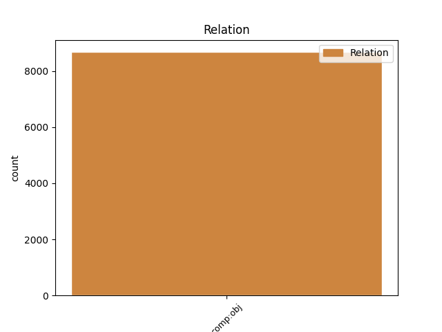
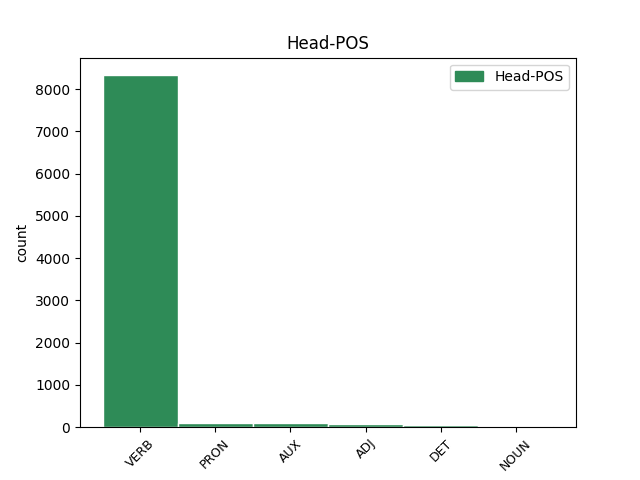
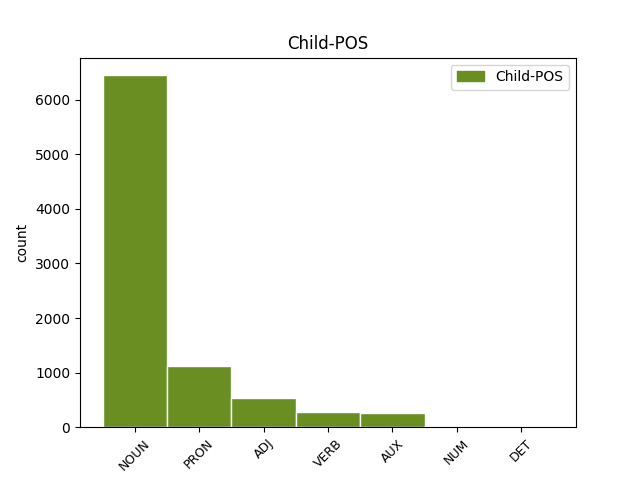

Distribution of features within this leaf



Agreement Rules sorted by frequency.
- When the dependent token is the direct object complements(comp:obj) of the head token,
1 A _ _ _ _ 0 _ _ _
2 la _ _ _ _ 0 _ _ _
3 trobada _ _ _ _ 0 _ _ _
4 , _ _ _ _ 0 _ _ _
5 Jordi _ _ _ _ 0 _ _ _
6 Pujol _ _ _ _ 0 _ _ _
7 plantejarà _ _ _ _ 0 _ _ _
8 el _ _ _ _ 0 _ _ _
9 seu _ _ _ _ 0 _ _ _
10 malestar _ _ _ _ 0 _ _ _
11 pel _ _ _ _ 0 _ _ _
12 que _ _ _ _ 0 _ _ _
13 considera considerar VERB VERB Mood=Ind|Number=Sing|Person=3|Tense=Pres|VerbForm=Fin 0 _ _ _
14 una _ _ _ _ 0 _ _ _
15 paralització paralització NOUN NOUN Gender=Fem|Number=Sing 13 comp:obj _ _
16 del _ _ _ _ 0 _ _ _
17 procés _ _ _ _ 0 _ _ _
18 autonòmic _ _ _ _ 0 _ _ _
19 per _ _ _ _ 0 _ _ _
20 part _ _ _ _ 0 _ _ _
21 de _ _ _ _ 0 _ _ _
22 l' _ _ _ _ 0 _ _ _
23 Executiu _ _ _ _ 0 _ _ _
24 del _ _ _ _ 0 _ _ _
25 PP _ _ _ _ 0 _ _ _
26 . _ _ _ _ 0 _ _ _
Disagree Examples:
1 La _ _ _ _ 0 _ _ _
2 sentència _ _ _ _ 0 _ _ _
3 , _ _ _ _ 0 _ _ _
4 a _ _ _ _ 0 _ _ _
5 la _ _ _ _ 0 _ _ _
6 qual _ _ _ _ 0 _ _ _
7 ha _ _ _ _ 0 _ _ _
8 tingut _ _ _ _ 0 _ _ _
9 accés _ _ _ _ 0 _ _ _
10 Intra-ACN _ _ _ _ 0 _ _ _
11 , _ _ _ _ 0 _ _ _
12 desestima desestimar VERB VERB Mood=Imp|Number=Sing|Person=2|VerbForm=Fin 0 _ _ _
13 els _ _ _ _ 0 _ _ _
14 recursos recurs NOUN NOUN Gender=Masc|Number=Plur 12 comp:obj _ _
15 interposats _ _ _ _ 0 _ _ _
16 pels _ _ _ _ 0 _ _ _
17 processats _ _ _ _ 0 _ _ _
18 , _ _ _ _ 0 _ _ _
19 Albert _ _ _ _ 0 _ _ _
20 Bramón _ _ _ _ 0 _ _ _
21 , _ _ _ _ 0 _ _ _
22 president _ _ _ _ 0 _ _ _
23 del _ _ _ _ 0 _ _ _
24 Col·legi _ _ _ _ 0 _ _ _
25 de _ _ _ _ 0 _ _ _
26 Veterinaris _ _ _ _ 0 _ _ _
27 de _ _ _ _ 0 _ _ _
28 Girona _ _ _ _ 0 _ _ _
29 en _ _ _ _ 0 _ _ _
30 el _ _ _ _ 0 _ _ _
31 moment _ _ _ _ 0 _ _ _
32 dels _ _ _ _ 0 _ _ _
33 fets _ _ _ _ 0 _ _ _
34 , _ _ _ _ 0 _ _ _
35 i _ _ _ _ 0 _ _ _
36 Josefina _ _ _ _ 0 _ _ _
37 J. _ _ _ _ 0 _ _ _
38 , _ _ _ _ 0 _ _ _
39 Pere _ _ _ _ 0 _ _ _
40 C. _ _ _ _ 0 _ _ _
41 i _ _ _ _ 0 _ _ _
42 Mateu _ _ _ _ 0 _ _ _
43 B. _ _ _ _ 0 _ _ _
44 , _ _ _ _ 0 _ _ _
45 que _ _ _ _ 0 _ _ _
46 actuaven _ _ _ _ 0 _ _ _
47 com _ _ _ _ 0 _ _ _
48 a _ _ _ _ 0 _ _ _
49 inspectors _ _ _ _ 0 _ _ _
50 veterinaris _ _ _ _ 0 _ _ _
51 de _ _ _ _ 0 _ _ _
52 la _ _ _ _ 0 _ _ _
53 Generalitat _ _ _ _ 0 _ _ _
54 , _ _ _ _ 0 _ _ _
55 i _ _ _ _ 0 _ _ _
56 que _ _ _ _ 0 _ _ _
57 van _ _ _ _ 0 _ _ _
58 ser _ _ _ _ 0 _ _ _
59 condemnats _ _ _ _ 0 _ _ _
60 per _ _ _ _ 0 _ _ _
61 l' _ _ _ _ 0 _ _ _
62 Audiència _ _ _ _ 0 _ _ _
63 de _ _ _ _ 0 _ _ _
64 Girona _ _ _ _ 0 _ _ _
65 per _ _ _ _ 0 _ _ _
66 un _ _ _ _ 0 _ _ _
67 delicte _ _ _ _ 0 _ _ _
68 de _ _ _ _ 0 _ _ _
69 negociacions _ _ _ _ 0 _ _ _
70 prohibides _ _ _ _ 0 _ _ _
71 a _ _ _ _ 0 _ _ _
72 funcionaris _ _ _ _ 0 _ _ _
73 . _ _ _ _ 0 _ _ _
1 Pel _ _ _ _ 0 _ _ _
2 que _ _ _ _ 0 _ _ _
3 fa _ _ _ _ 0 _ _ _
4 al _ _ _ _ 0 _ _ _
5 coneixement _ _ _ _ 0 _ _ _
6 de _ _ _ _ 0 _ _ _
7 la _ _ _ _ 0 _ _ _
8 il·licitud _ _ _ _ 0 _ _ _
9 de _ _ _ _ 0 _ _ _
10 la _ _ _ _ 0 _ _ _
11 seva _ _ _ _ 0 _ _ _
12 acció _ _ _ _ 0 _ _ _
13 , _ _ _ _ 0 _ _ _
14 l' _ _ _ _ 0 _ _ _
15 alt _ _ _ _ 0 _ _ _
16 tribunal _ _ _ _ 0 _ _ _
17 sosté _ _ _ _ 0 _ _ _
18 que _ _ _ _ 0 _ _ _
19 ' _ _ _ _ 0 _ _ _
20 és _ _ _ _ 0 _ _ _
21 evident _ _ _ _ 0 _ _ _
22 que _ _ _ _ 0 _ _ _
23 són _ _ _ _ 0 _ _ _
24 universitaris _ _ _ _ 0 _ _ _
25 , _ _ _ _ 0 _ _ _
26 amb _ _ _ _ 0 _ _ _
27 un _ _ _ _ 0 _ _ _
28 estàndard _ _ _ _ 0 _ _ _
29 de _ _ _ _ 0 _ _ _
30 coneixements _ _ _ _ 0 _ _ _
31 d' _ _ _ _ 0 _ _ _
32 acord _ _ _ _ 0 _ _ _
33 amb _ _ _ _ 0 _ _ _
34 la _ _ _ _ 0 _ _ _
35 seva _ _ _ _ 0 _ _ _
36 especialitat _ _ _ _ 0 _ _ _
37 ' _ _ _ _ 0 _ _ _
38 i _ _ _ _ 0 _ _ _
39 afegeix _ _ _ _ 0 _ _ _
40 que _ _ _ _ 0 _ _ _
41 ' _ _ _ _ 0 _ _ _
42 des _ _ _ _ 0 _ _ _
43 d' _ _ _ _ 0 _ _ _
44 aquesta _ _ _ _ 0 _ _ _
45 realitat _ _ _ _ 0 _ _ _
46 no _ _ _ _ 0 _ _ _
47 és _ _ _ _ 0 _ _ _
48 acceptable _ _ _ _ 0 _ _ _
49 defensar _ _ _ _ 0 _ _ _
50 que _ _ _ _ 0 _ _ _
51 no _ _ _ _ 0 _ _ _
52 tenien tenir VERB VERB Mood=Ind|Number=Plur|Person=3|Tense=Imp|VerbForm=Fin 0 _ _ _
53 la _ _ _ _ 0 _ _ _
54 consciència consciència NOUN NOUN Gender=Fem|Number=Sing 52 comp:obj _ _
55 de _ _ _ _ 0 _ _ _
56 la _ _ _ _ 0 _ _ _
57 il·licitud _ _ _ _ 0 _ _ _
58 de _ _ _ _ 0 _ _ _
59 la _ _ _ _ 0 _ _ _
60 seva _ _ _ _ 0 _ _ _
61 acció _ _ _ _ 0 _ _ _
62 , _ _ _ _ 0 _ _ _
63 ja _ _ _ _ 0 _ _ _
64 que _ _ _ _ 0 _ _ _
65 això _ _ _ _ 0 _ _ _
66 forma _ _ _ _ 0 _ _ _
67 part _ _ _ _ 0 _ _ _
68 del _ _ _ _ 0 _ _ _
69 nivell _ _ _ _ 0 _ _ _
70 mitjà _ _ _ _ 0 _ _ _
71 de _ _ _ _ 0 _ _ _
72 coneixements _ _ _ _ 0 _ _ _
73 i _ _ _ _ 0 _ _ _
74 sensibilitats _ _ _ _ 0 _ _ _
75 atribuïdes _ _ _ _ 0 _ _ _
76 a _ _ _ _ 0 _ _ _
77 la _ _ _ _ 0 _ _ _
78 generalitat _ _ _ _ 0 _ _ _
79 de _ _ _ _ 0 _ _ _
80 persones _ _ _ _ 0 _ _ _
81 que _ _ _ _ 0 _ _ _
82 estan _ _ _ _ 0 _ _ _
83 en _ _ _ _ 0 _ _ _
84 aquesta _ _ _ _ 0 _ _ _
85 situació _ _ _ _ 0 _ _ _
86 ' _ _ _ _ 0 _ _ _
87 . _ _ _ _ 0 _ _ _
1 D' _ _ _ _ 0 _ _ _
2 altra _ _ _ _ 0 _ _ _
3 banda _ _ _ _ 0 _ _ _
4 , _ _ _ _ 0 _ _ _
5 el _ _ _ _ 0 _ _ _
6 Suprem _ _ _ _ 0 _ _ _
7 entén _ _ _ _ 0 _ _ _
8 que _ _ _ _ 0 _ _ _
9 no _ _ _ _ 0 _ _ _
10 és _ _ _ _ 0 _ _ _
11 acceptable _ _ _ _ 0 _ _ _
12 que _ _ _ _ 0 _ _ _
13 els _ _ _ _ 0 _ _ _
14 recurrents _ _ _ _ 0 _ _ _
15 desconeguessin desconèixer VERB VERB Mood=Sub|Number=Plur|Person=3|Tense=Imp|VerbForm=Fin 0 _ _ _
16 la _ _ _ _ 0 _ _ _
17 normativa normativa NOUN NOUN Gender=Fem|Number=Sing 15 comp:obj _ SpaceAfter=No
18 , _ _ _ _ 0 _ _ _
19 per _ _ _ _ 0 _ _ _
20 la _ _ _ _ 0 _ _ _
21 seva _ _ _ _ 0 _ _ _
22 professió _ _ _ _ 0 _ _ _
23 i _ _ _ _ 0 _ _ _
24 condició _ _ _ _ 0 _ _ _
25 de _ _ _ _ 0 _ _ _
26 funcionaris _ _ _ _ 0 _ _ _
27 públics _ _ _ _ 0 _ _ _
28 de _ _ _ _ 0 _ _ _
29 la _ _ _ _ 0 _ _ _
30 Generalitat _ _ _ _ 0 _ _ _
31 . _ _ _ _ 0 _ _ _
1 Amb _ _ _ _ 0 _ _ _
2 la _ _ _ _ 0 _ _ _
3 protesta _ _ _ _ 0 _ _ _
4 reclamen _ _ _ _ 0 _ _ _
5 que _ _ _ _ 0 _ _ _
6 l' _ _ _ _ 0 _ _ _
7 empresa _ _ _ _ 0 _ _ _
8 variï _ _ _ _ 0 _ _ _
9 la _ _ _ _ 0 _ _ _
10 seva _ _ _ _ 0 _ _ _
11 actitud _ _ _ _ 0 _ _ _
12 i _ _ _ _ 0 _ _ _
13 accedeixi _ _ _ _ 0 _ _ _
14 a _ _ _ _ 0 _ _ _
15 la _ _ _ _ 0 _ _ _
16 negociació _ _ _ _ 0 _ _ _
17 del _ _ _ _ 0 _ _ _
18 conveni _ _ _ _ 0 _ _ _
19 i _ _ _ _ 0 _ _ _
20 denuncien denunciar VERB VERB Mood=Ind|Number=Plur|Person=3|Tense=Pres|VerbForm=Fin 0 _ _ _
21 l' _ _ _ _ 0 _ _ _
22 actitud actitud NOUN NOUN Gender=Fem|Number=Sing 20 comp:obj _ _
23 ' _ _ _ _ 0 _ _ _
24 prepotent _ _ _ _ 0 _ _ _
25 ' _ _ _ _ 0 _ _ _
26 de _ _ _ _ 0 _ _ _
27 l' _ _ _ _ 0 _ _ _
28 Ajuntament _ _ _ _ 0 _ _ _
29 de _ _ _ _ 0 _ _ _
30 Manresa _ _ _ _ 0 _ _ _
31 . _ _ _ _ 0 _ _ _
1 L' _ _ _ _ 0 _ _ _
2 Ajuntament _ _ _ _ 0 _ _ _
3 de _ _ _ _ 0 _ _ _
4 Manresa _ _ _ _ 0 _ _ _
5 ha _ _ _ _ 0 _ _ _
6 posat posar VERB VERB Gender=Masc|Number=Sing|Tense=Past|VerbForm=Part 0 _ _ _
7 en _ _ _ _ 0 _ _ _
8 funcionament _ _ _ _ 0 _ _ _
9 tot _ _ _ _ 0 _ _ _
10 un _ _ _ _ 0 _ _ _
11 seguit _ _ _ _ 0 _ _ _
12 de _ _ _ _ 0 _ _ _
13 mesures mesura NOUN NOUN Gender=Fem|Number=Plur 6 comp:obj _ SpaceAfter=No
14 , _ _ _ _ 0 _ _ _
15 la _ _ _ _ 0 _ _ _
16 majoria _ _ _ _ 0 _ _ _
17 informatives _ _ _ _ 0 _ _ _
18 , _ _ _ _ 0 _ _ _
19 que _ _ _ _ 0 _ _ _
20 tenen _ _ _ _ 0 _ _ _
21 com _ _ _ _ 0 _ _ _
22 a _ _ _ _ 0 _ _ _
23 finalitat _ _ _ _ 0 _ _ _
24 minimitzar _ _ _ _ 0 _ _ _
25 els _ _ _ _ 0 _ _ _
26 efectes _ _ _ _ 0 _ _ _
27 de _ _ _ _ 0 _ _ _
28 la _ _ _ _ 0 _ _ _
29 vaga _ _ _ _ 0 _ _ _
30 . _ _ _ _ 0 _ _ _